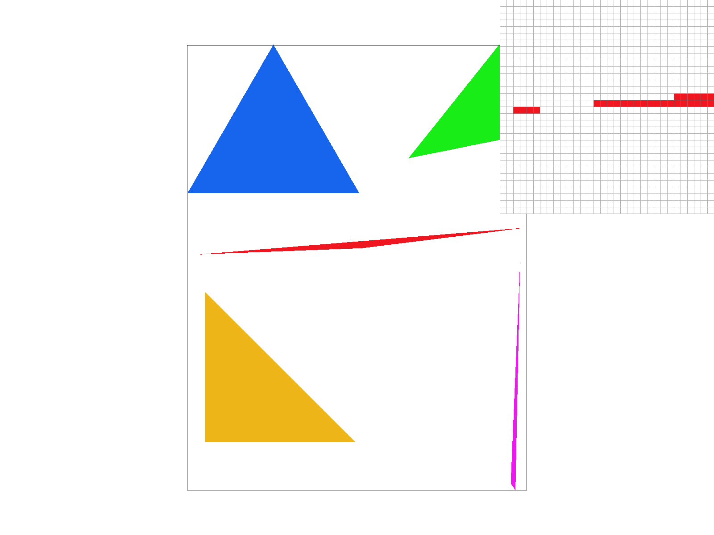
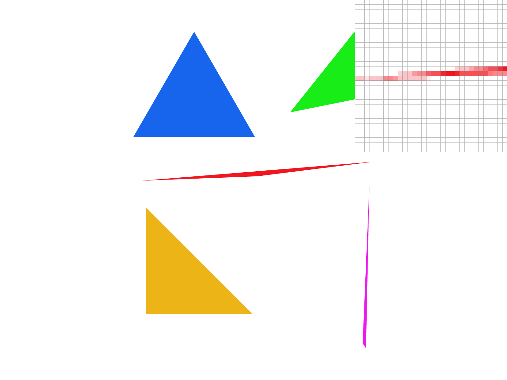
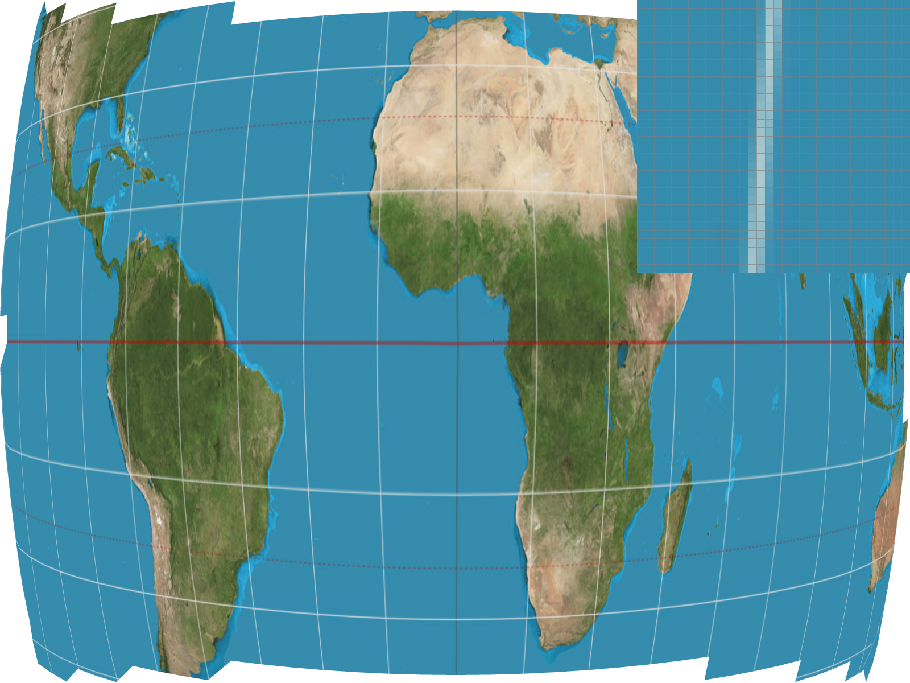
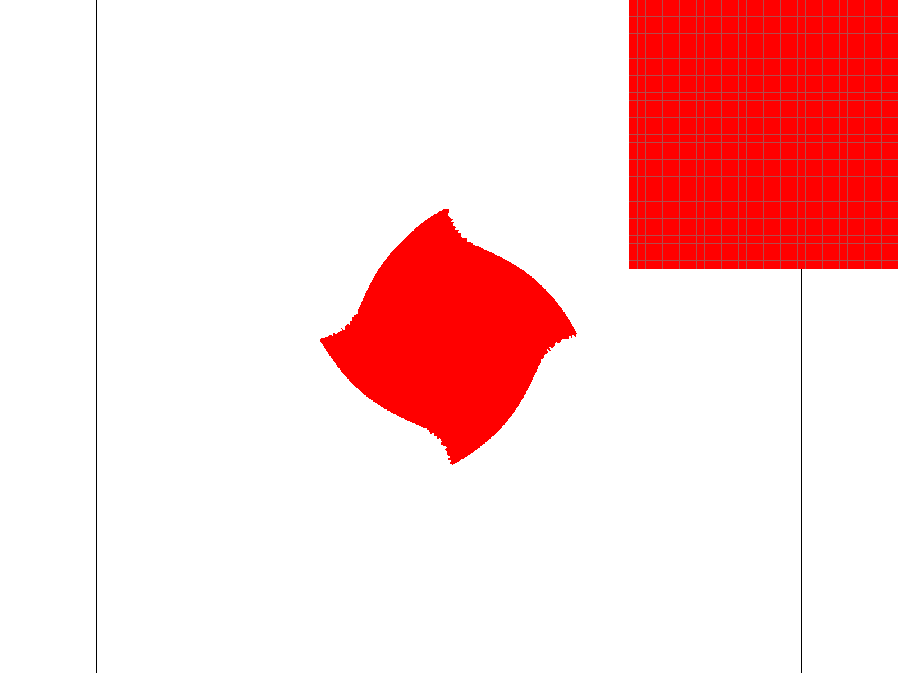
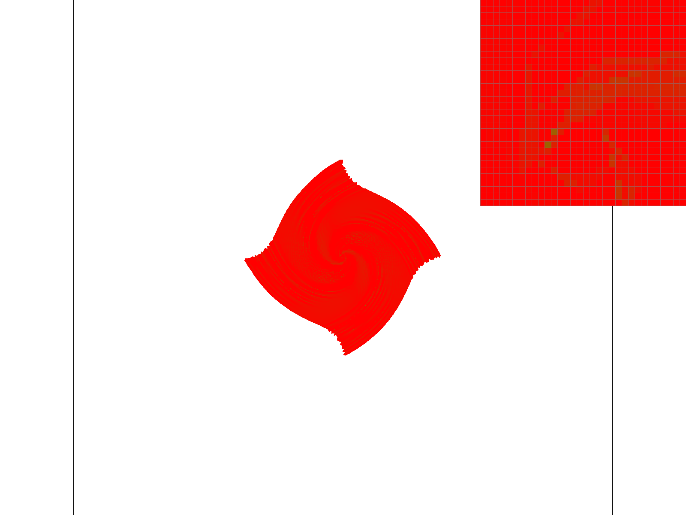
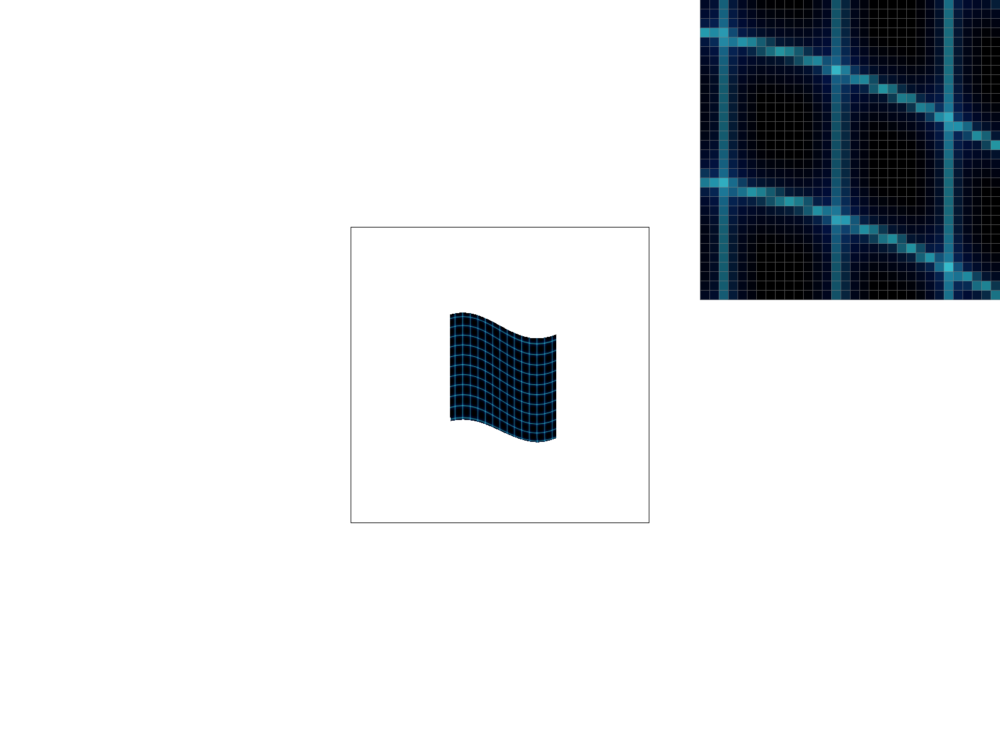

Give a high-level overview of what you implemented in this project. Think about what you've built as a whole. Share your thoughts on what interesting things you've learned from completing the project.
Here's how I rasterize triangles:
- Given 3 points, I first computed three normal vectors using "right-hand-rule" n0=(y0 - y1, x1 - x0), same for the other two.
- Then, I make sure the normal vectors point inside the triangle by flipping the directions of all normal vectors if (x2 - x0) * n0 < 0 (same for the other two) because if the inner product of normal vector and the third point is negative, that means the normal vector is pointing outside the triangle.
- I also find the bounding box of the triangle by computing the min and max of x and y coordinates.
- Finally, I loop over all the pixels inside the bounding box, checking if the pixel sample is inside the triangle ((x-x0+0.5, y-y0+0.5) * n0 >= 0 same for the other two). If yes, fill the pixel with color.
My implementation is no worse than the performance of sampling within the bounding box because I only sample within the bounding box as well. The bounding box is defined as within the rectangle spanned by (min_x, min_y) and (max_x, max_y).
The interesting part of the scene is at the very left of the middle red triangle. Since there's no antialiasing, the triangle "breaks" at the pointy edge.
Here's how I implement supersampling:
- All information gets written to sample_buffer first and then to rgb_framebuffer_target in the end for rendering.
- I modify the signature for fillPixel() to include a new parameter s that determines which super sample it should fill.
- The sample_buffer of size width * height * sample_rate and is designed so that super samples for a particular pixel are neighboring elements to preserve spatial locality for good performance. (For pixel (x, y), its corresponding super samples are sample_buffer[sample_rate * (y * width + x) + s] for s in range(sample_rate).)
- For rasterize_point(), to get consistent results, I fill all the super samples corresponding to the underlying pixel to fill.
- For rasterize_triangle(), I check for all super samples (x + 0.5 / sqrt(sample_rate) * (1+2*xx), y + 0.5 / sqrt(sample_rate) * (1+2*y)) where xx, yy in range(sqrt(sample_rate)) (These are the coordinates for the super samples in the SVG space).
- When writing to rgb_framebuffer_target, I average all super samples' colors for a particular pixel to determine the actual color for that pixel.
- Supersampling is useful because it antialiases the triangles by making the edges smoother. By averaging the super samples, we get a better sense of "the proportion of region that the triangle covers for that particular pixel". Rather than a "0-or-1" hard threshold for pixels, we now allow a pixel to be "partially turned on" so that pixels in the edge have a smoother transition to the background (resulting in lower frequency).
|

|
|
|
|

|
We can observe that the higher the sample rate is, the smoother edges we get. As explained above, this is because when we have more super samples to average out, we get a better sense of the proportion covered by the triangle in that pixel, resulting in smoother edges and lower frequencies.
I drew a robot doing Kung Fu. I changed the colors of the hands and feet to be blue, and rotate the limbs following the transform hierarchy.
Barycentric coordinates describes a point's "relative" location within a triangle. The coordinate is as (alpha, beta, gamma) which forms a linear interpolation of the 3 vertices of the triangle (X = alpha * A + beta * B + gamma * C). Trivially, if X is at point A, then the coordinates will be (1, 0, 0). This image shows the barycentric coordinates for all points within the triangle using RGB values. Notice how the color is pure around the vertices and blends together at the center.
No modifications are made.
Pixel sampling for texture mapping transform screen location to texture location using barycentric coordinates, and directly sample texture color at full texture resolution for all screen pixels.
Similar to the previous part, I first compute the barycentric coordinates for the screen sample, and then compute the coordinate for the corresponding texture coordinate using the same barycentric coordinates to interpolate the texture triangle. Finally, I apply specific pixel sampling methods to extract the color for the texture and extract the color of that texel.
Nearest: This sampling method simply extracts the color of the closest texel for the texture coordinate. I implement this by simply rounding the coordinates to the nearest integer.
Bilinear: This sampling method computes a linear interpolation of the 4 surrounding texels' colors. I implement this by first writing a helper function lerp() to help with doing linear interpolation, and then do 3 rounds of interpolation for the 4 surrounding texels (computed by floor(), ceil()) to extract the color for the texture coordinate.
|
|
|
|
|

|
This is a zoomed in version of texmap/test1.svg.
As shown in the pictures, when sample rate is 1, there's a clear difference between nearest sampling and bilinear sampling, where nearest sampling has a lot of jaggies, and bilinear sampling creates a much smoother grid. The difference is not that clear when we get to a higher sample rate of 16.
This is mainly because when doing texture sampling on full resolution texture, one pixel area could cover a lot of texels which results in a low texture sampling rate. If the sampling rate is too low, there will be aliasing. This is especially true for nearest sampling because we're only sampling 1 texel within all the texels covered by the pixel while bilinear sampling sort of uses 4 texels which implies a higher sampling rate.
The reason why there's not much differences for higher sample rate is because supersampling already takes care of some aliasing.
Although bilinear sampling solves some of the problem above, it "blurs" the entire scene the same way, while what we actually want is that the foreground is clean and the background is blurred because the texture sampling rate at foreground is high and the texture sampling rate at background is low.
Level sampling helps solve this problem by maintaining different resolution versions of the same texture image (called levels), and we sample from the higher resolution texture when texture sampling rate is high (like in foreground, when one pixel covers few texels), and we sample from lower resolution texture when texture sampling rate is low (like in background, when one pixel covers many texels.)
Doing this keeps the foreground clean while preventing aliasing from happening in the background where texture sampling rate is low.
As shown in the "debugging" images below, level sampling uses different levels indicated by different colors.
|

|

|
I implement level sampling by following the equations from lectures. First, I compute the corresponding texture coordinates for neighboring pixels, and use the maximum distance between them to compute the logarithm for selecting the level to sample. Then, follow the methods for point sampling where the only difference is I sample color from the specified mipmap level instead of on the full resolution texture.
Speed: Supersampling should have a much worse runtime comparing to point sampling and level sampling because it samples multiple samples at one pixel where the latter two methods only sample one.
Memory: Supersampling should take more space comparing to point sampling and level sampling because it needs to store a buffer of all the super samples which requires 4x or 9x or 16x more space. Level sampling stores a couple more mipmaps of textures but one could easily prove that the additional space is never greater than 2x the original space required. Pixel sampling requires the least amount of space because it's only using the full resolution texture.
Antialiasing: Supersampling has the best antialiasing power, level sampling has pretty good antialiasing power, but as seen in lectures, it sometimes overblurs the background. Pixel sampling has the worst antialiasing power.
Supersampling has good antialiasing power but is very costly to compute in both time and space complexity. Level sampling seems like a balanced option. Pixel sampling has bad antialiasing power but is cheap to compute.
|
|
|
|
|

|
As seen in the screenshots, in L_ZERO, some of the vertical grids are missing. Switching to L_NEAREST helps bring back a little bit of the missing grids. Finally, using P_LINEAR helps recover even more missing grids.
I'm lazy!!!